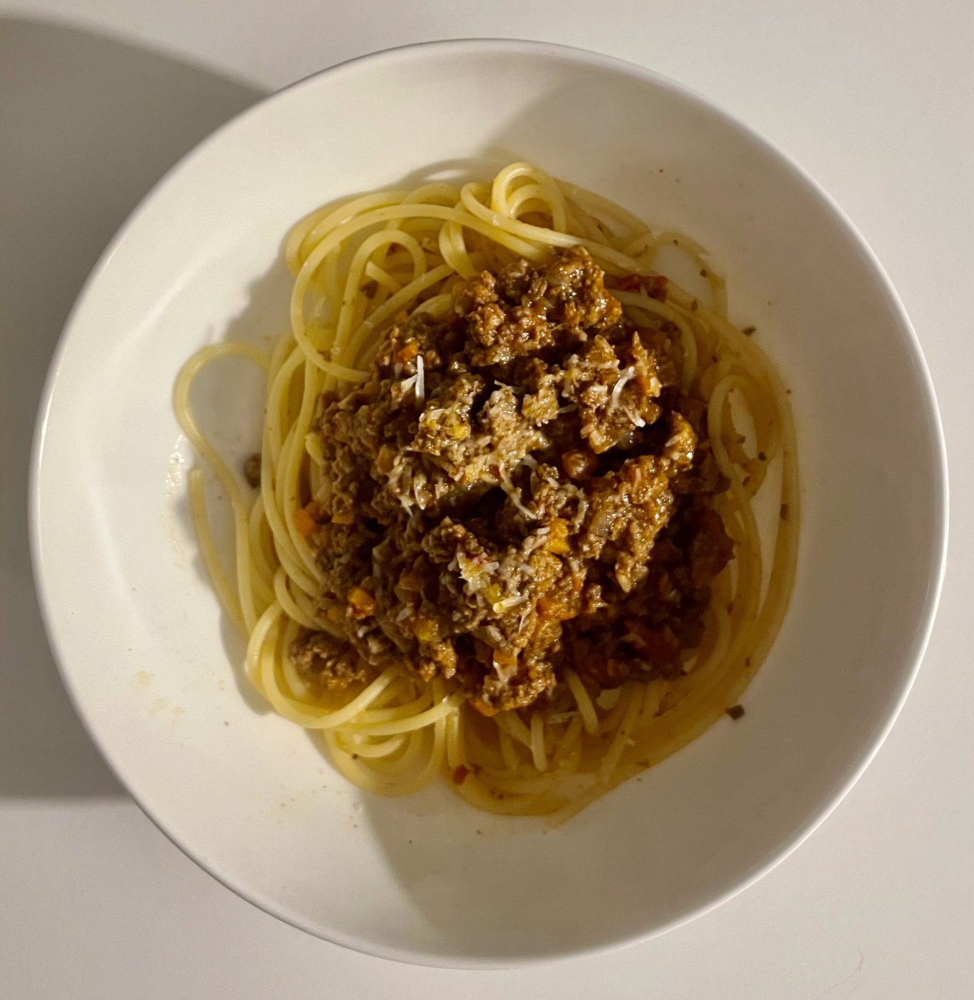

Deeply browned mince, a proper soffritto, and a splash of red wine reduced right down — this is the quicker, saucier sibling of our slow-braised ragù.
The finishing touch is an egg yolk stirred through off the heat at the end, which rounds out the sauce and gives it a silky, glossy finish without needing cream.
Ready in about an hour, though it only gets better with a longer simmer if you've got the time.

4 servings
45–60 mins • High Protein • Base: 4 servings
Rich in iron and B vitamins from the beef, with the egg yolk adding a little extra richness and choline. Tomatoes and garlic bring antioxidants that support immune health.